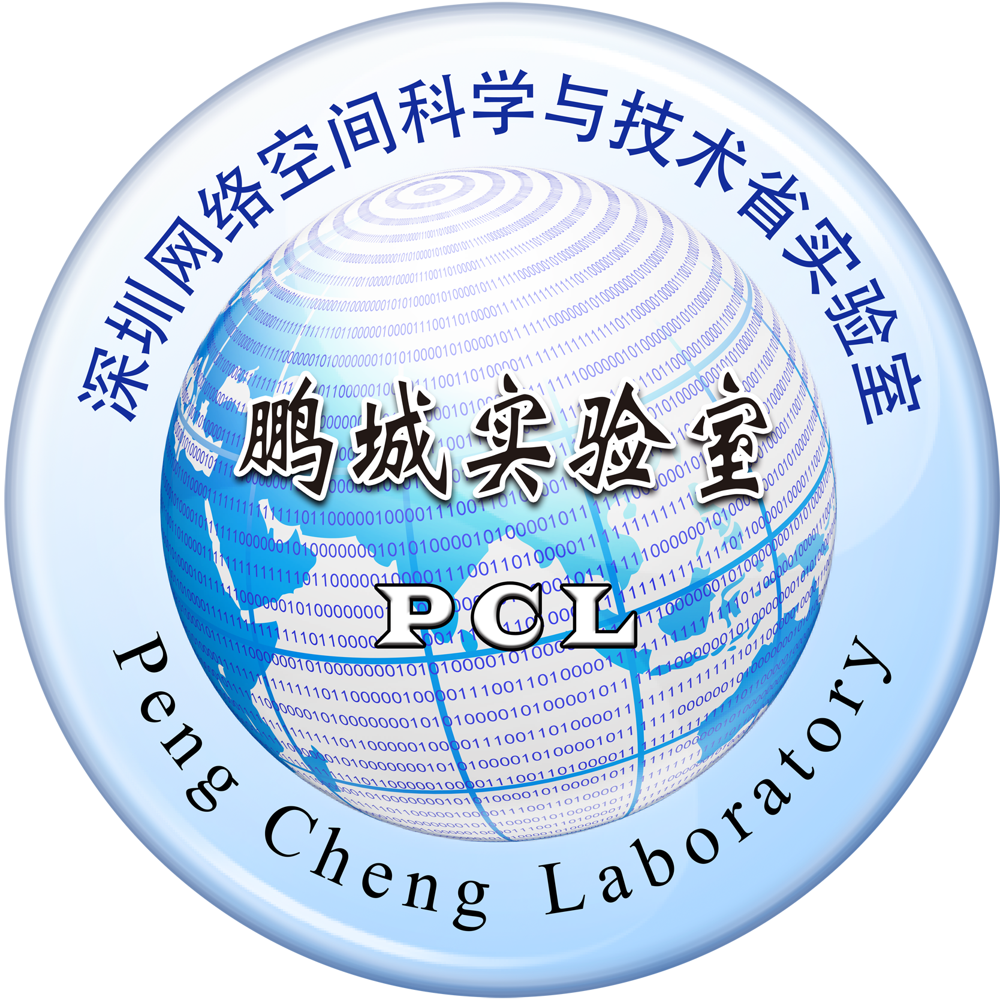

Wen Wu (IEEE Senior Member)
 |
|
Welcome
I am an Associate Researcher with the Frontier Research Center in the Peng Cheng Laboratory, Shenzhen, China, since 2021. I received the B.E., M.E., and Ph.D. degrees in EE from South China University of Technology, Guangzhou, China in 2012, the University of Science and Technology of China, Hefei, China in 2015, and the University of Waterloo, Waterloo, Canada in 2019, respectively. I worked as a Postdoctoral Research Fellow in the ECE Department in the University of Waterloo from 2019 to 2021. My research interests include 6G networks, network intelligence, and network virtualization.
2024南方科技大学联培博士生招生
招生简章，截止时间：11月13日
招收类型：普博
鹏城实验室、高校导师：吴稳
Position Opening : Feel free to send your CV to me via email
Researcher Position: We are constantly looking for excellent Researchers (PDF)
Postdoc Fellow Position: We are constantly looking for excellent Postdoc Fellows (PDF)
PhD Student Position: We are constantly looking for highly motivated PhD students (PDF). 目前研究室正在招收2024级鹏城实验室和南科大、北邮、中大等多所高校联合培养博士，欢迎各位同学报名，邮件将个人简历、成绩单发送到wuw02@pcl.ac.cn，详见鹏城实验室招生网站
Visiting Students: We are constantly looking for excellent PhD and master visiting students.
Employment
Associate Researcher, since Nov. 2021
Intelligent Networking Research Lab, Peng Cheng Laboratory, Shenzhen, China
Post-Doctoral Research Fellow, Oct. 2019 - Aug. 2021
Department of Electrical and Computer Engineering, University of Waterloo, Waterloo, Canada
Supervisor: Prof. Xuemin (Sherman) Shen
Education
Doctor of Philosophy, Department of Electrical and Computer Engineering, 2015 - 2019
Broadband Communications Research (BBCR) Lab, University of Waterloo, Waterloo, Canada.
Supervisor: Prof. Xuemin (Sherman) Shen
Thesis: Design and Analysis of Beamforming in mmWave Networks
Master of Engineering, Communication and Information Systems, 2012 - 2015
University of Science and Technology of China, Hefei, China
Supervisor: Prof. Guo Wei
Thesis: Interference Alignment with Limited Feedback for Multiuser Interference Networks
Bachelor of Engineering, Information Engineering, 2008-2012
South China University of Technology, Guangzhou, China
Final Year Project: Performance Analysis of Monobit Digital Receivers
Research Interests
Digital twin network
AI-driven wireless networking
Wireless distributed learning
6G network security
Award and Recognition
Young Scholar Award (国家级青年人才), Ministry of Science and Technology, 2023
World’s Top 2% Scientists, Stanford University, 2023
VANET Algorithm Simulation Competition Third-Price Award (Supervisor), China Institute of Communications, 2023
Young Elite Scientist, China Association of Science and Technology in Communication Society, 2023
Student Project Competition Runner-Up Award (Supervisor), IEEE Comsoc, 2023
Award for Excellence (Early Career Researcher), IEEE Hyper-Intelligence Technical Committee, 2022
Best Paper Award, IEEE/CIC ICCC, 2022
Senior Member, IEEE, 2022
Senior Member, China Institute of Communications, 2022
Distinguished Researcher (Level-C), Peng Cheng Laboratory, 2022
Faculty of Engineering Graduate Scholarship Award, University of Waterloo, 2019
Graduate Scholarship, University of Waterloo, 2015-2019
International Doctoral Student Award, University of Waterloo, 2015-2019
Best Speaker Award, ECE Graduate Seminar Series, University of Waterloo, 2015
Guorui Scholarship, China Electronics Technology Corporation 14th Research Institute, 2014
Research Funding
PI, Holistic Network Virtualization for 6G Networks, China Association of Science and Technology in Communication Society, 2023-2025
PI, Service-Oriented Network Slicing for Vehicular Networks, NSFC, 2023-2025
PI, Artificial General Intelligence for 6G Networks, 2023-2025
Co-PI, Fundamental Research for Intelligent Networks, 2021-2024
Participant, Intelligent Routing Theory and Device Design, Ministry of Science and Technology of China, 2019-2022
Participant, Proactive User-Centric Networking for Next Generation Wireless Communications, NSERC, 2019-2022
Participant, High Efficiency Wireless LAN MAC Layer Design, NSERC, 2015-2017
|  |